Open calls
We’re reading, and these are the kinds of books we’re hoping to find.
Bipedal Press is an independent publisher in Hickory, North Carolina. No fees, fair royalties, hands-on editing, and cover, layout, and audiobook all done in-house. Pick the call that sounds most like your book, or send it to our submission guidelines if it sits between them.
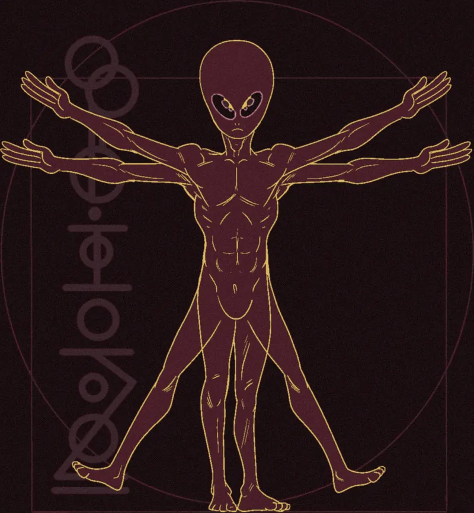
Dark academiaFlying Too Close to the Sun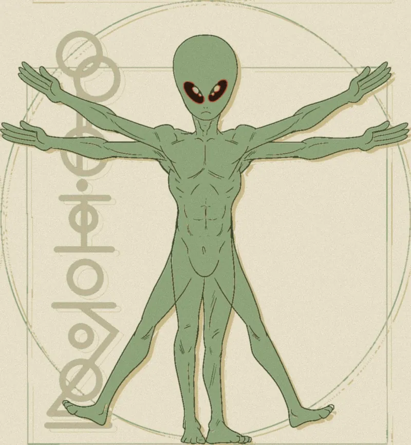
Wild woman and witchyNevertheless, she persisted.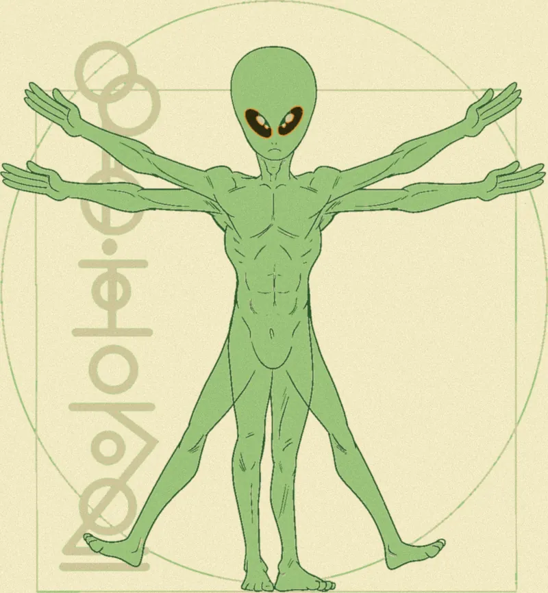
Vegan fictionThe Chicken Has a Story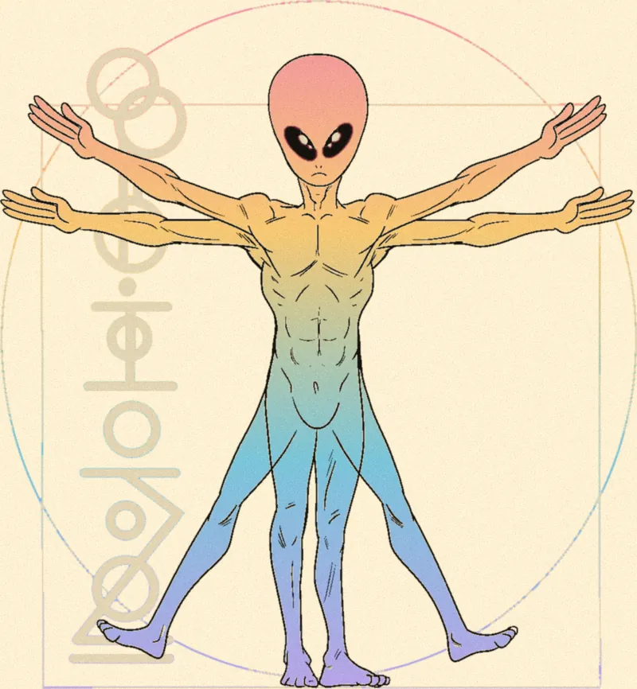
LGBTQIA+ fictionStrange, Honest, and Entirely Yours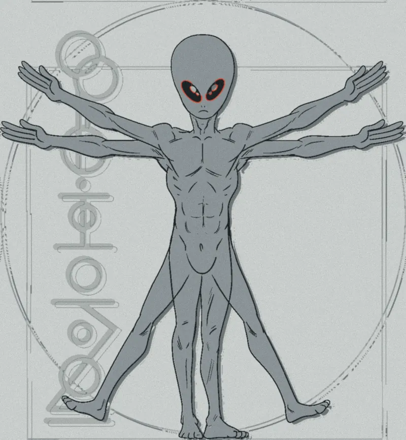
Dystopian fictionA Dystopia Too Close for Comfort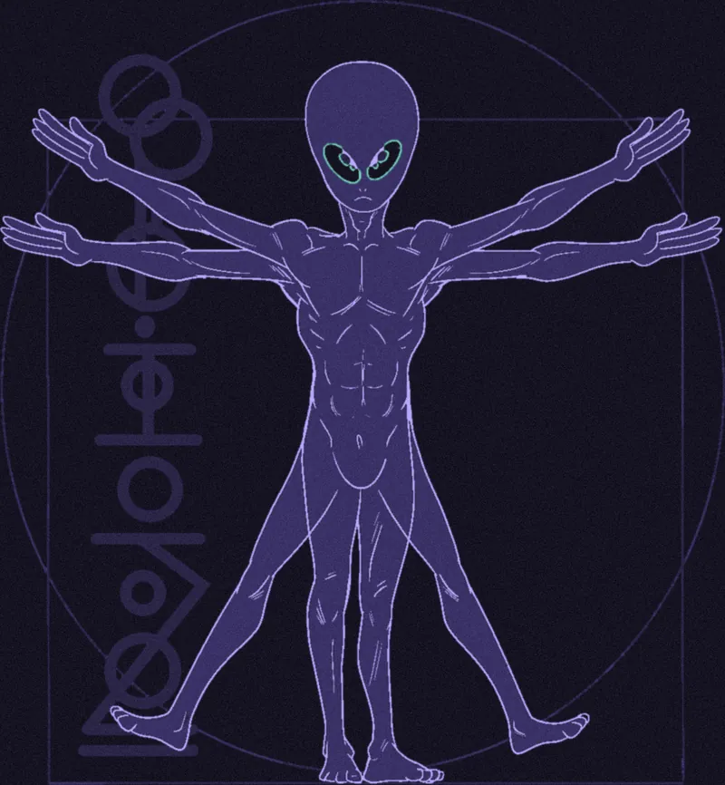
Speculative fictionTold by Something That Isn’t Human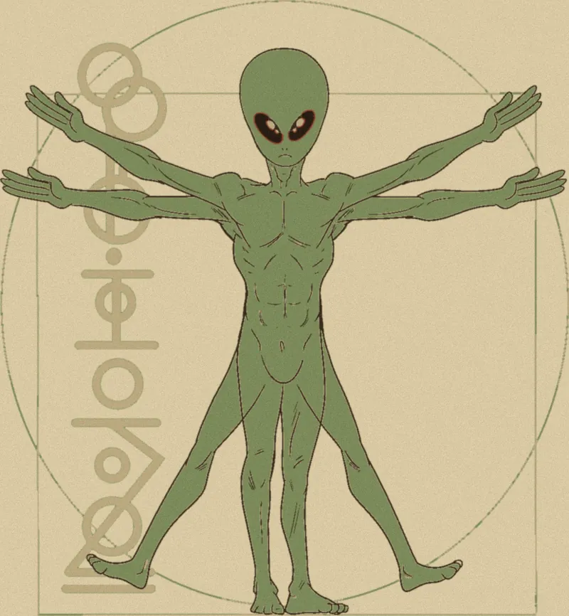
Southern and Appalachian gothicThe House Has Been in the Family Too Long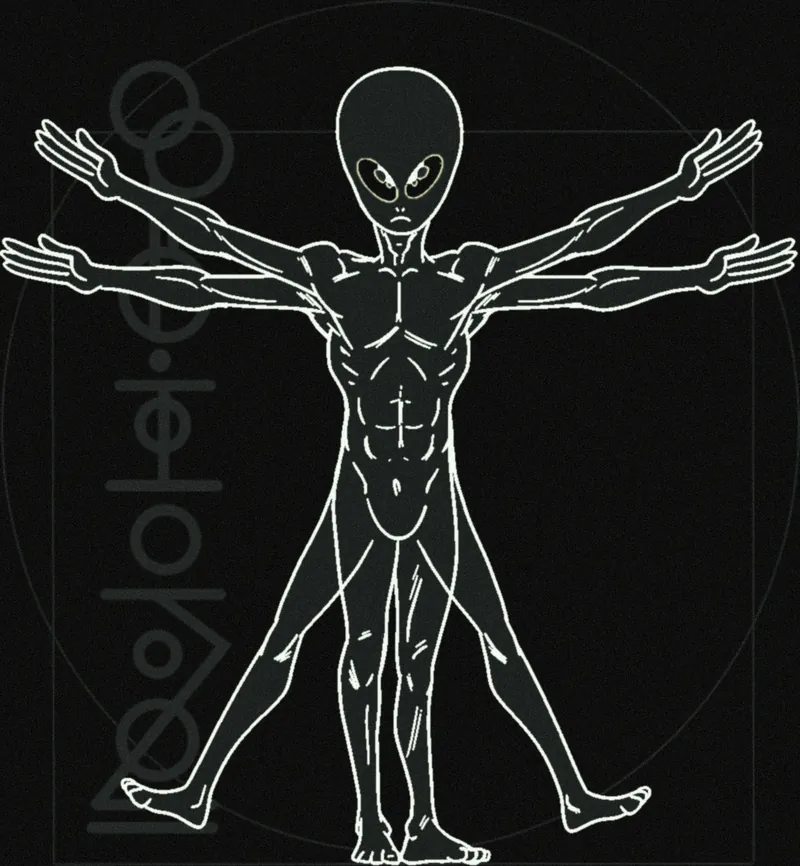
Psychological and gothic horrorYou Were Never Alone in the House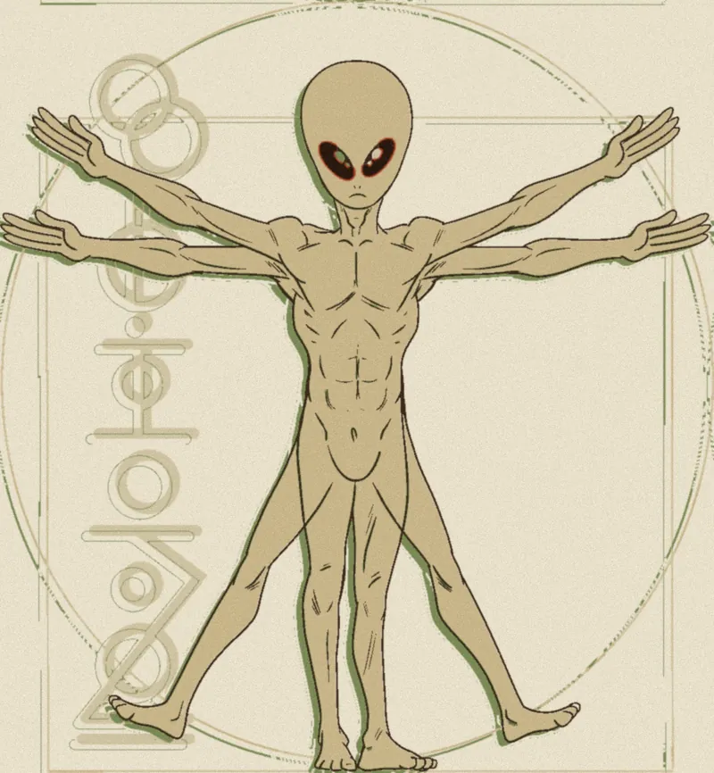
Folk horror and eco-horrorThere’s Something in the Woods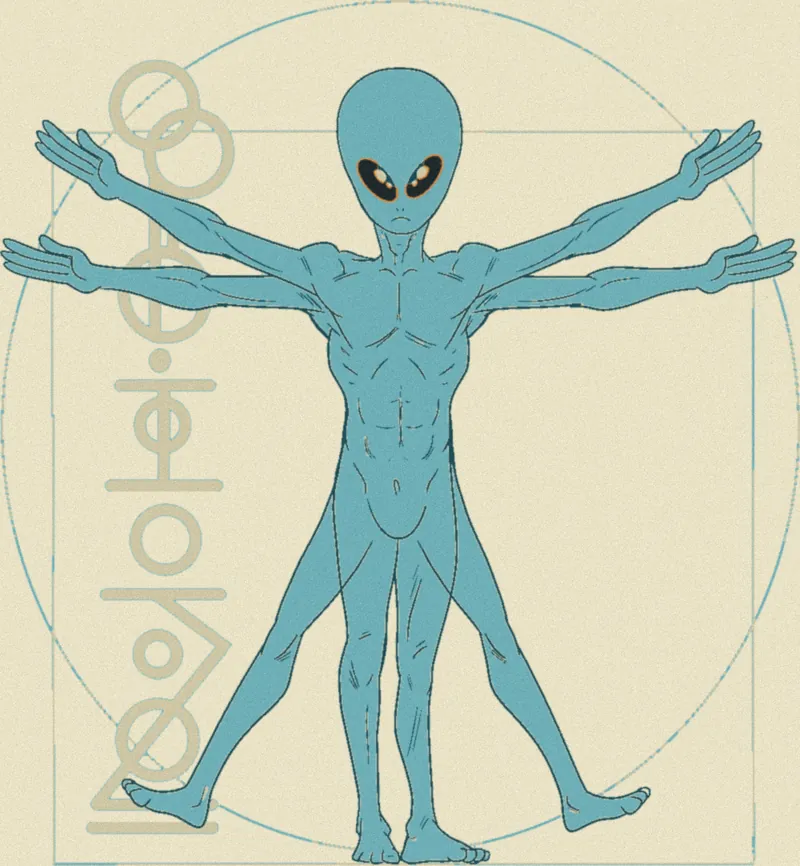
Environmental and climate fictionThe Riverbed Is Barren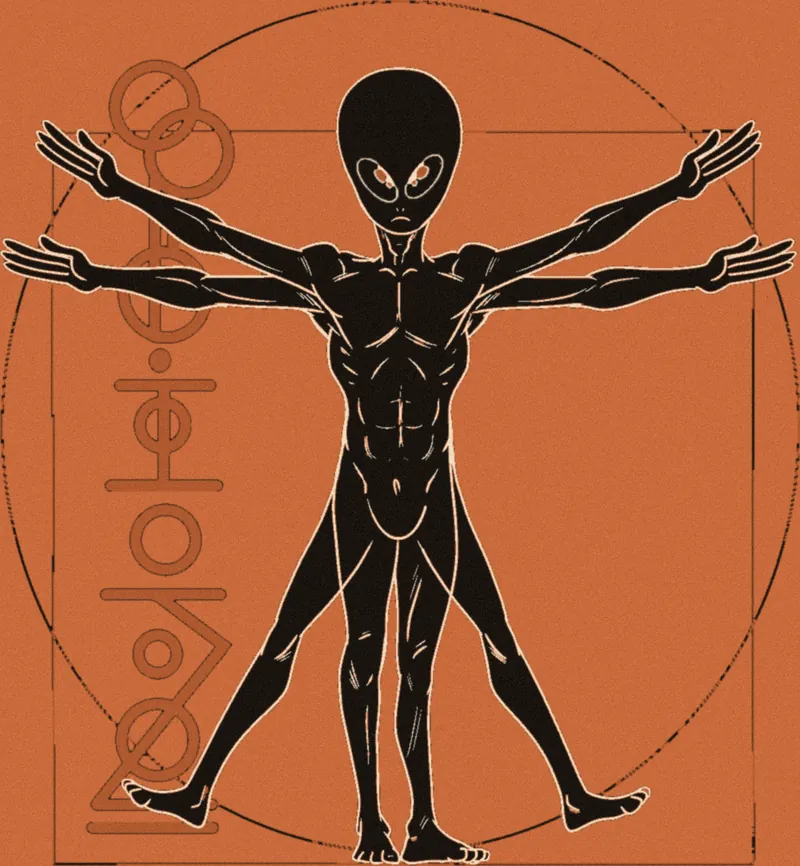
Mythological retellingsSomebody Was Left Out of the Story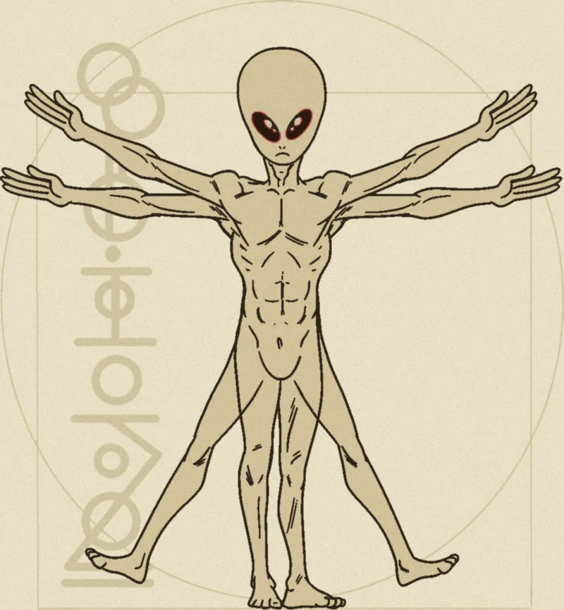
Epistolary and archival fictionNobody Was Supposed to Find These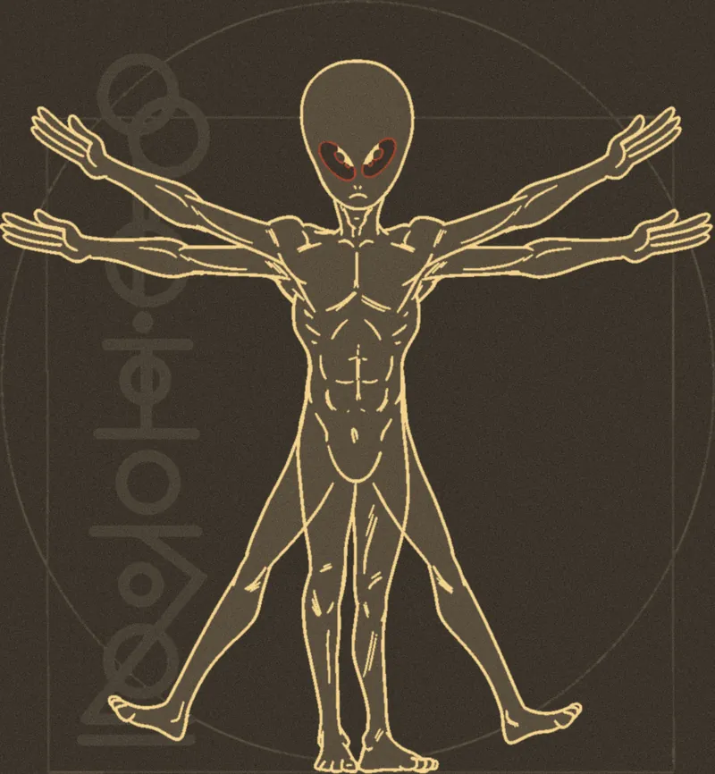
Gritty historical fictionThe Past Was Not Polite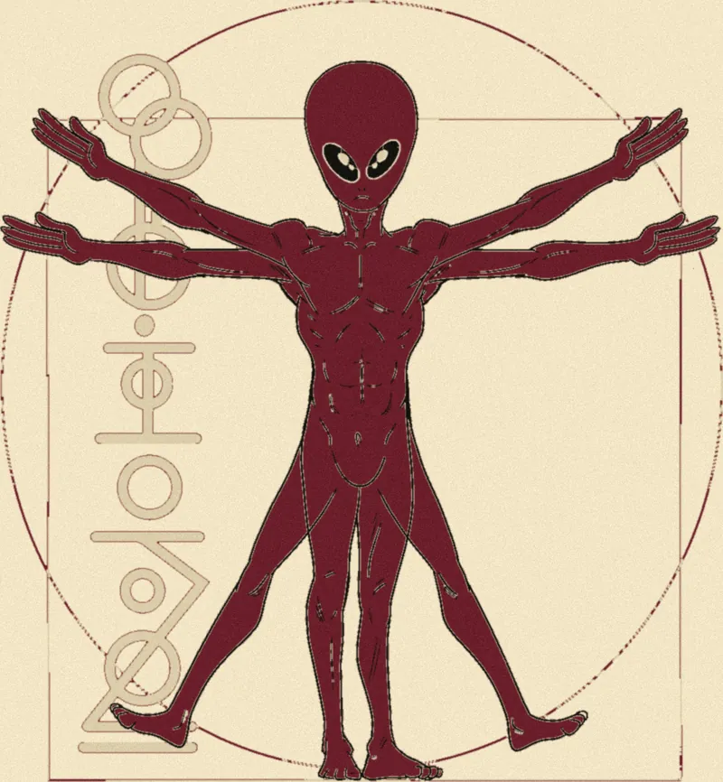
NovellasGot a Novella? We’d Love to Read It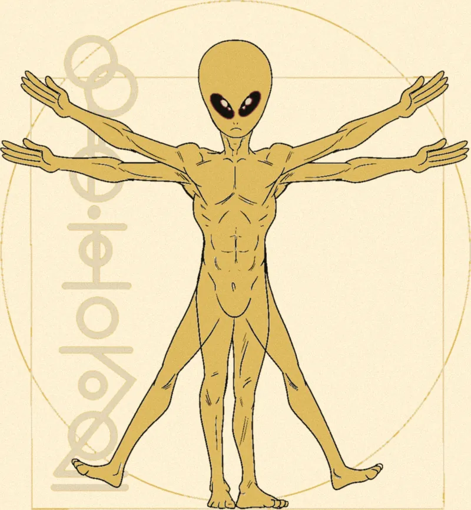
Debut authorsYour First Book Belongs Here